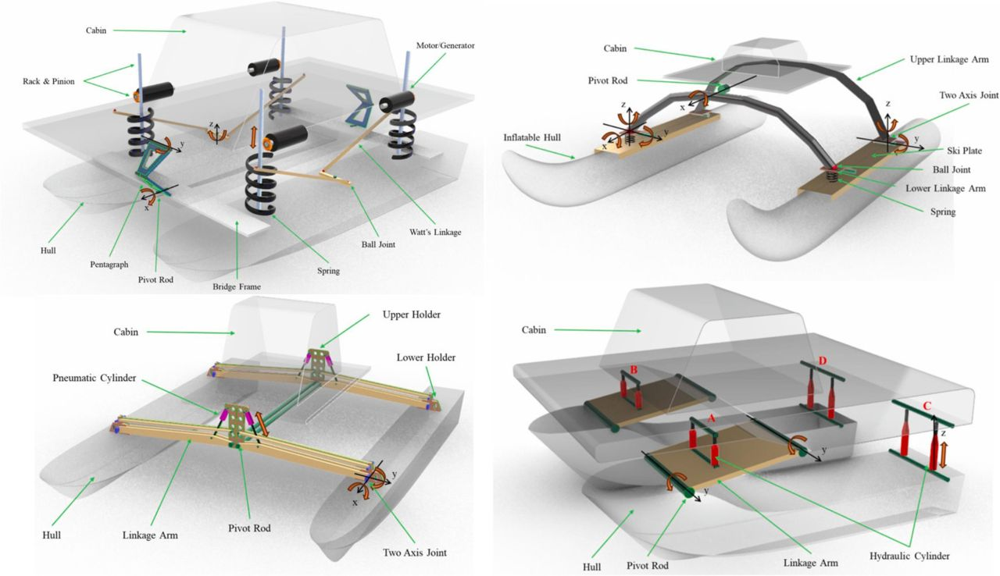

State-of-the-art review and key technical challenges of suspension ships with decoupled cabin-hull structures

Abstract
Suspension ships, as a novel type of vessel, have garnered increasing attention in recent years. By incorporating a suspension system that mechanically decouples the passenger cabin and working deck from the hulls, these ships can effectively isolate onboard spaces from wave-induced motions. Characterised by their ability to extend and retract suspension linkages, they offer promising potential for motion mitigation and wave energy harvesting. To provide a comprehensive overview of the development of suspension ships, this paper presents a chronological review of both developed and existing suspension ships, highlighting their distinctive structural features and underlying design principles. Additionally, the latest advancements in suspension ship technology are examined. Key challenges are identified, and potential areas for application are outlined, providing insights into the future direction of suspension ship development. By consolidating current knowledge, this review aims to serve as a foundational resource for marine researchers and engineers, fostering further innovations and broadening the practical implementation of suspension ships.
Read the published article ↗